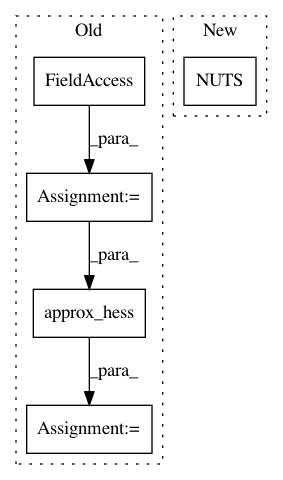

1651d0e5b770c2475328b6c6e7dc6560a0404ade,pymc/examples/simpletest.py,,,#,8
Before Change
d = Normal("data", mu=x, tau=.75 ** -2, observed=data)
start = model.test_point
h = approx_hess(start)
step = HamiltonianMC(model.vars, h)
trace = sample(1e3, step, start)
After Change
d = Normal("data", mu=x, tau=.75 ** -2, observed=data)
step = NUTS()
trace = sample(1e3, step)
subplot(2, 2, 1)
In pattern: SUPERPATTERN
Frequency: 3
Non-data size: 5
Instances
Project Name: pymc-devs/pymc3
Commit Name: 1651d0e5b770c2475328b6c6e7dc6560a0404ade
Time: 2013-09-25
Author: thomas.wiecki@gmail.com
File Name: pymc/examples/simpletest.py
Class Name:
Method Name:
Project Name: pymc-devs/pymc3
Commit Name: 1651d0e5b770c2475328b6c6e7dc6560a0404ade
Time: 2013-09-25
Author: thomas.wiecki@gmail.com
File Name: pymc/examples/gelman_bioassay.py
Class Name:
Method Name:
Project Name: pymc-devs/pymc3
Commit Name: 1651d0e5b770c2475328b6c6e7dc6560a0404ade
Time: 2013-09-25
Author: thomas.wiecki@gmail.com
File Name: pymc/examples/nutstest.py
Class Name:
Method Name: